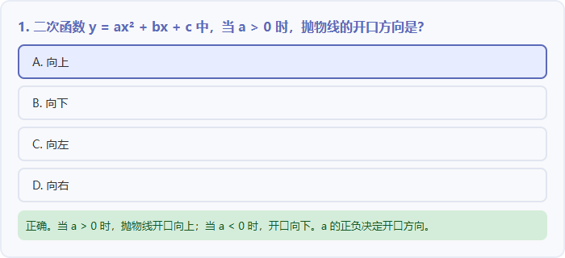

数学函数与几何交互
用参数变化和即时反馈组织数学探究。


复制到WorkBuddy
请制作可离线打开的HTML数学交互页，包含二次函数a、b、c，一次函数k、b，等腰三角形、矩形和圆。拖动参数时更新图像和性质，显示a=0和k=0时的情况。加入6道选择题，选择后给出答案和解析，结束能重做。
复现方法
- 打开示例，先预测一个参数变化的结果，再拖动验证。
- 复制提示词制作新版本，或上传示例修改一道题。
使用要点
图像与性质随参数同步改变；a=0、k=0时说明正确；三角形注明等腰条件。
扩展提示词
把一道题改成先预测图像变化、再拖动参数验证，并在解析中解释原因。
适用与扩展
小学数学：保留矩形、圆与面积探究，移除函数；英语：把“调整参数”迁移为“更换词库与句型”；科学：改成变量控制实验。